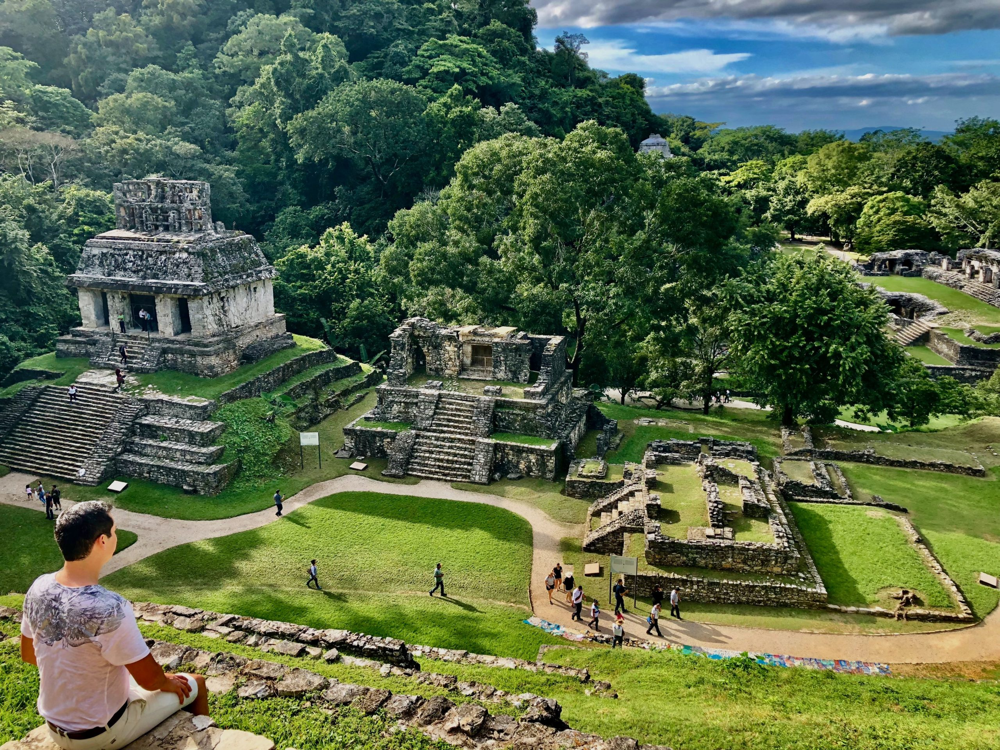
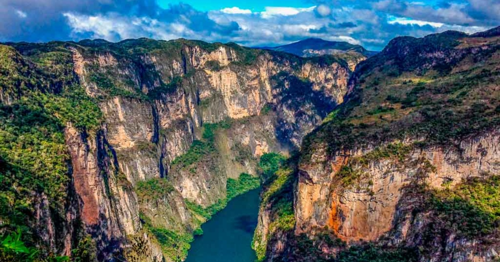
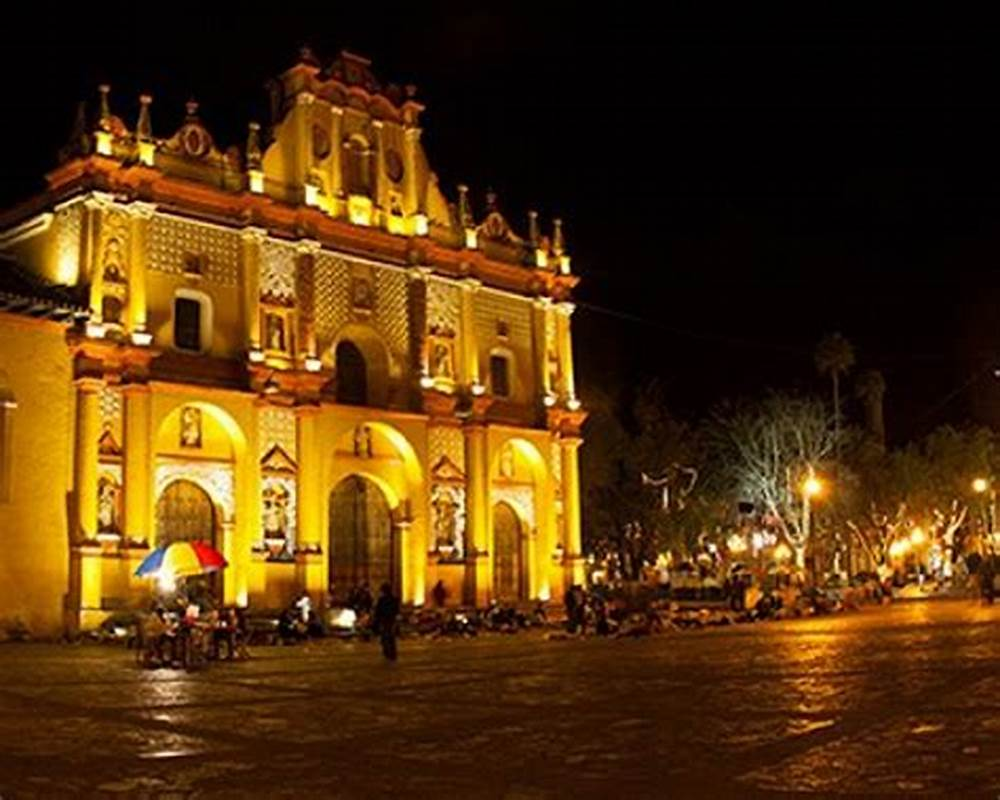
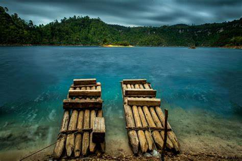

Blog de Viajes Chiapas
¡Bienvenidos a nuestro rincón de descubrimiento y aventura! En nuestro blog de viajes, te invitamos a embarcarte en un viaje fascinante a través de los lugares más increíbles de Chiapas.
| # | Destinos | Atracciones Principales | Alojamiento |
|---|---|---|---|
| 1 | Palenque | Zona Arqueológica de Palenque, Cascadas de Misol-Ha, Grutas de Palenque | Hoteles cerca de las Ruinas de Palenque |
| 2 | Cañón del Sumidero | Los Acantilados, El Río Grijalva, El Mirador | Tuxtla Gutierrez |
| 3 | San Cristóbal de las Casas | Catedral de San Cristóbal, Grutas de Rancho Nuevo, Mercado de Santo Domingo | Hotel Bo |
| 4 | Lagos de Montebello | Lagos y Lagunas, Cascadas, Recorridos en Bote, Cueva de Colores | Cabañas Quinta Montebello |
Palenque
"Palenque Chiapas: Donde la Historia Canta y la Naturaleza Encanta."
Palenque es una ciudad ubicada en el estado de Chiapas, en el sureste de México. Es conocida principalmente por el sitio arqueológico de Palenque, que es uno de los sitios arqueológicos más importantes de la civilización maya. El sitio está situado en la selva tropical y contiene impresionantes estructuras arquitectónicas, templos y palacios que datan del período clásico de la civilización maya, alrededor del siglo VII d.C.
Visita Palenque, Chiapas Cañón del Sumidero
"Descubre la majestuosidad en cada eco: Cañón del Sumidero, donde la naturaleza cobra vida."
El Cañón del Sumidero es un impresionante cañón ubicado en el estado de Chiapas, México. Este cañón fue formado por el río Grijalva y está rodeado por acantilados que alcanzan alturas de hasta 1,000 metros. El cañón es uno de los principales atractivos turísticos de Chiapas y es conocido por su belleza natural y paisajes espectaculares. El río Grijalva fluye a través del cañón, creando un paisaje impresionante y ofreciendo oportunidades para actividades como paseos en bote.
Visita el Cañón San Cristóbal de las Casas
"Donde la cultura y la naturaleza se encuentran en armonía."
San Cristóbal de las Casas es una ciudad ubicada en el estado de Chiapas, en el sureste de México. Es conocida por su rica historia, arquitectura colonial y su vibrante cultura indígena. La ciudad se encuentra en un valle rodeado de montañas y bosques, lo que le confiere un clima agradable durante todo el año.
Visita SanCris Lagos de Montebello
"Descubre la magia en cada ola, Lagunas de Montebello".
Los Lagos de Montebello son un grupo de lagos situados en el estado de Chiapas, México, cerca de la frontera con Guatemala. Este sistema de lagos se encuentra en el Parque Nacional Lagunas de Montebello, que es conocido por su belleza natural y paisajes impresionantes. Los Lagos de Montebello son famosos por sus aguas cristalinas que varían en color, desde el azul claro hasta el verde esmeralda, debido a los minerales presentes en el agua y la luz solar que se refleja en la superficie del lago. Hay alrededor de 59 lagos y lagunas en la zona, cada uno con su propio encanto y características únicas. Los visitantes pueden disfrutar de actividades como paseos en bote, caminatas, observación de aves y acampada en este hermoso entorno natural.
Visita Lagos de Montebello 